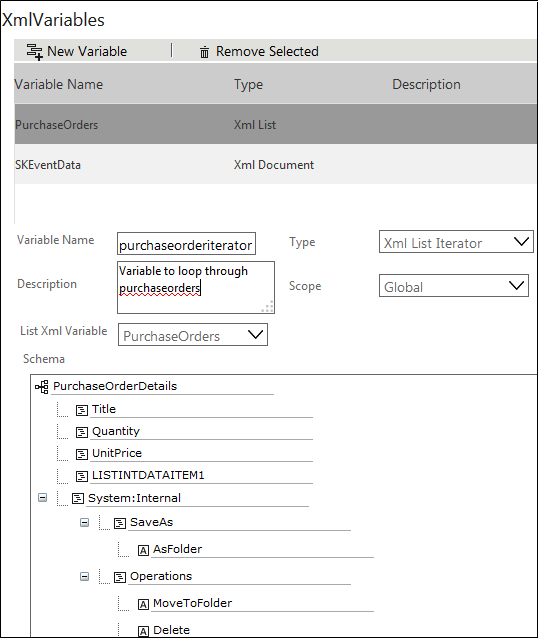

No
Iterating through the List Item and Grid Item of the List
AVEVA Work Tasks allows you to loop through the list items and grid items of a list. A XML List Iterator type XML variable can be used to iterate through the list items, where XML Iterator type XML variable can be used to iterate through the grid items of a list. This feature can be explained with the help of a Purchase Order list scenario.
The Purchase Orders contains details like:
- Reference Number
- Purchase Order Date
- Raised By User
- Deliver To User
- Status
- Purchase Order Details
- Item Name
- Quantity
- Unit Price
- Item Total
- Total Purchase amount
Now you want to loop through the approved purchase order items (items with status as Approved) as well as its child items.
To iterate through the list item and grid item of the list
- Log on to the Enterprise Console and go to Workflow Designer.
Note: As a first step, you need to create an XML List type XML variable for the Purchase Orders list. If the variable is not created, follow the below mentioned procedure to create.
- Click the edit icon in the XMLVariables property from the Start Activity Properties.
- Click New Variable to add a new variable.
- Enter the variable name as purchaseorders.
- Select XML List from the Type drop-down list.
- Enter the List name or click the
 icon to select the list. In this case, select Purchase Orders list.
icon to select the list. In this case, select Purchase Orders list. - Select the scope from the ListItem Scope Options. Later, you can change the scope of the variable to List Query to query the approved purchase orders using List Navigator activity.
- Click Save Variable. A message is displayed saying 'Variable Updated'.
- Now, you need to create XML List Iterator type XML variable to iterate through the approved purchase order items. Click New Variable from the XMLVariable screen.
- Type the variable name as purchaseorderiterator.
- Select XML List Iterator from the Type drop-down list.
- Select purchaseorders from the List XML Variable drop-down list.
 - Click Save Variable. A message is displayed saying 'Variable Updated'.
- You need to create XML Iterator type XML variable for the purchaseorderiIterator (XML List Iterator type) XML variable to iterate through the child nodes of the currently iterating purchase order item. Click New Variable from the XML Variable screen.
- Type the variable name as purchaseorderdetails.
- Select XML Iterator from the Type drop-down list.
- Select purchaseorderiterator from the XML Variable drop-down list.
- From the Node Select drop-down List, select the repeating node that is, PurchaseOrderDetails.
- Click Save Variable. A message is displayed saying 'Variable Updated'. Use List Navigator activity to query the approved purchase order items.
- In this case, the following query is used to retrieve the approved purchase orders.
SKEListItemDataNV(t1).nvarchar3 = 'Approved', where SKEListItemDataNV is the table used to store the list items and nvarchar3 is the table column mapped to the Status field.
Use ForEach-Loop and Next Loop activities to loop through the approved purchase order items.
- Select purchaseordersiterator from the XML Iterator drop-down list of ForEach Loop activity.
- Use any action as per the requirement to retrieve the data. You need to access the value of the parent nodes from the purchaseordersiterator XML variable.
Use another set of ForEach-Loop and Next activities within the existing loop to iterate through the grid items (PurchaseOrderDetails).
- Select purchaseordedetails from the XML Iterator drop-down list of ForEach Loop activity.
- Use any action as per the requirement to retrieve the data. You need to access the value of the parent nodes from the purchaseorderdetails XML variable.